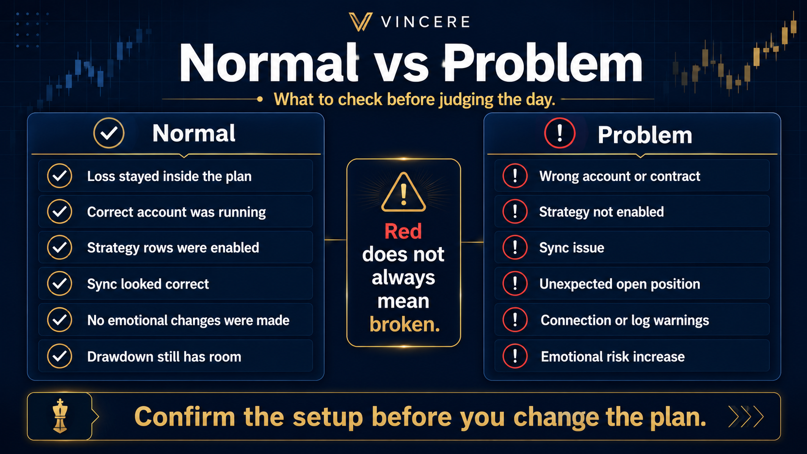
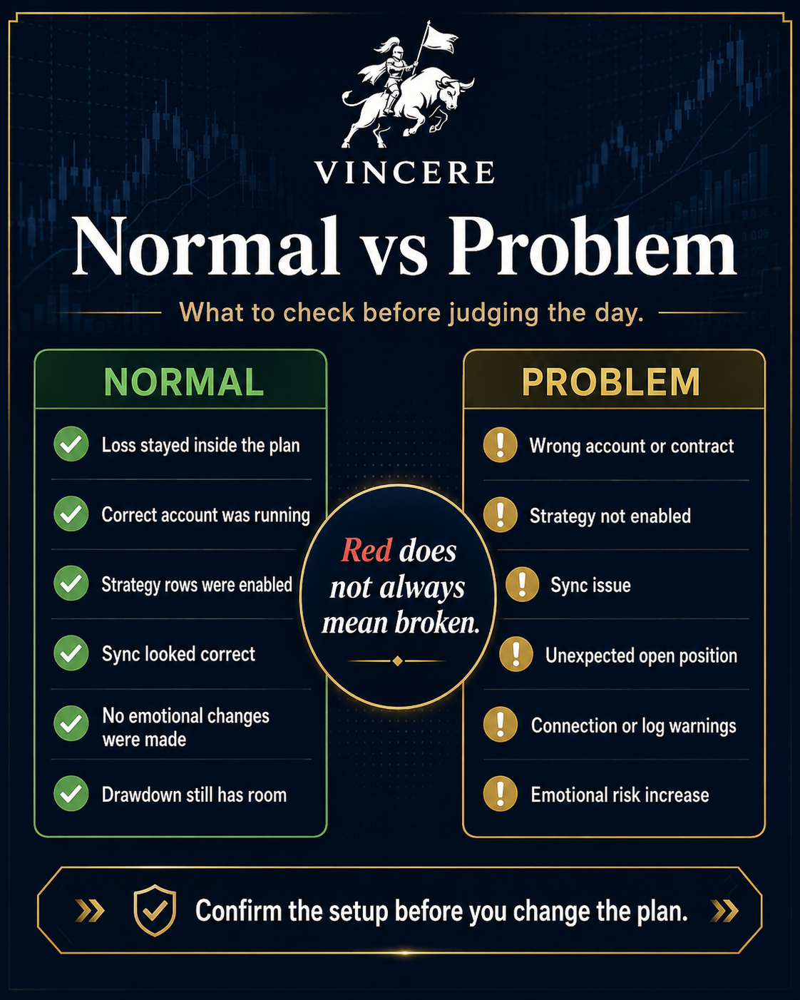

A 90-second self-check for after a rough trading day. Answer honestly at each step — the tree tells you where you land.
Run every check in order. The first "yes" is your bucket — stop there.

Confirm before you judge the strategy. This is where most false alarms live — a disabled row or a sync miss looks exactly like "the algo broke" until you check it.
Uncomfortable does not always mean broken. A loss that respects your planned daily/weekly risk is a normal outcome of a rules-based system, not a signal to intervene.
The account hasn't broken any rule and isn't blown — but it's carrying less room than it was. This is a sizing/exposure decision, not a panic decision.
This is the step members skip most — and the one with the highest cost when skipped. The urge to "win it back" is the tell.
You've run the tree in order. Land on the first bucket that matched — that's your action for today. If you landed on Review Setup and it doesn't resolve, file a support ticket with the account, strategy, and what the log showed.
